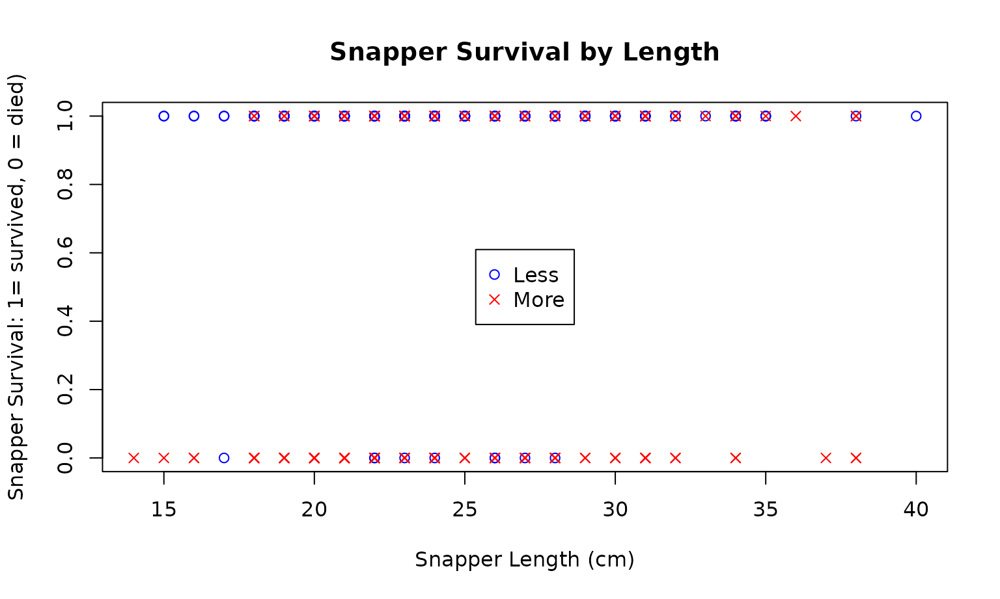
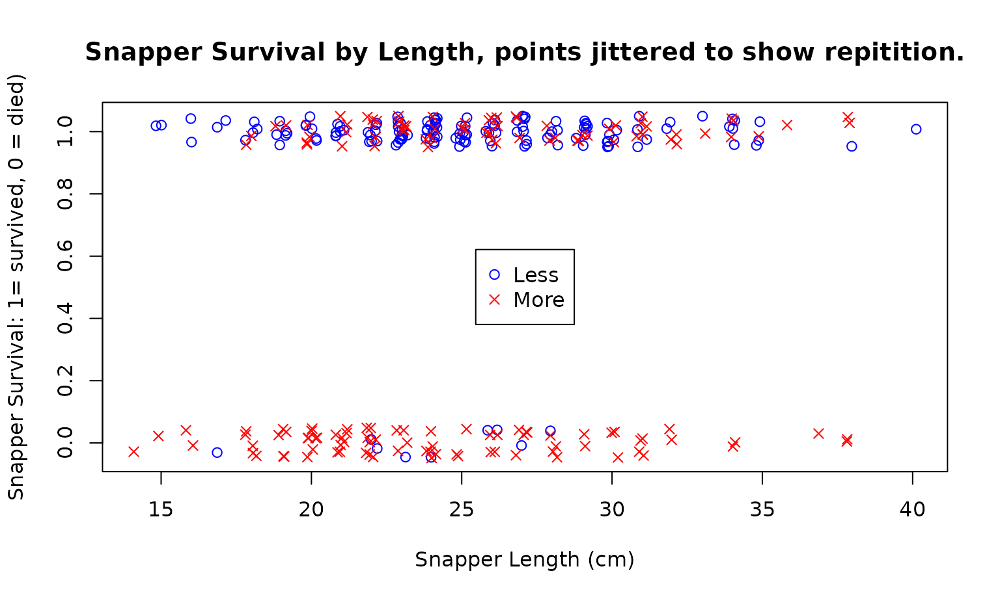
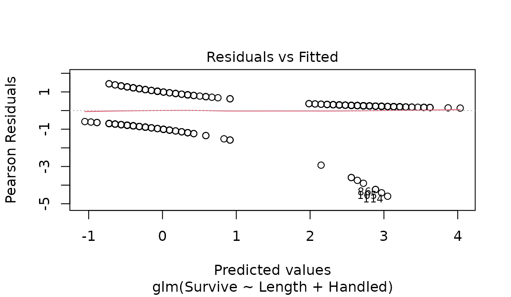

Case Study 15.4: STATS 201/8 Extra Case Study - Binomial GLM - Binary Data.
Source:vignettes/articles/CS15_4.Rmd
CS15_4.RmdQuestion 1
Snapper (Pagrus auratus) are a fish that is heavily targeted by recreational fishers in the Hauraki Gulf. The legal minimum landed size is 30cm, and all snapper less than this size must be discarded (i.e., returned to the sea).
An experiment was undertaken to determine the survival of discarded snapper. Snapper were caught by hook and line, measured for length, the hook was removed, and all snapper were placed in holding tanks for 5 days. The handling time (the duration between the fish being brought to the surface and being placed in a tank) was recorded as whether or not it was 2 minutes or less.
The resulting binary data is stored in Snapper.csv which contains the following variables:
| Variable | Description |
|---|---|
| Survive | Whether or not the snapper survived, coded as 1=alive after 5 days, 0=dead. |
| Length | The length of the snapper (cm). |
| Handled | The amount of time the snapper was handled (classified as either
Less if 2 minutes or less, or More if more
than 2 minutes). |
It is of interest to learn about the survival probability of discarded snapper. In particular:
- It is of interest to learn how fish length and handling time affect survival and quantify any significant effects.
- Did any effect of the length of the fish on the survival time depend on the handling time?
- We also want to estimate the probability of a 25 cm long snapper surviving for both handling times of 2 minute or less and for more than 2 minutes.
Instructions:
- Comment on the plot of the data. (Some of the data is listed to help clarify the plot.)
- Fit a logistic regression model. Determine whether the model can be simplified and determine an appropriate final model.
- Estimate the survival probability of a 25 cm snapper for with handling times of both “Less” and “More”. (You do not need interval estimates.)
- Write appropriate Methods and Assumption Checks.
- Write an Executive Summary. Remember to answer all questions of interest.
Questions of Interest
It is of interest to learn about the survival probability of discarded snapper, in particular, how fish length and handling time affect survival.
Read in and inspect the data:
Snapper.df = read.csv("Snapper.csv", header = TRUE, stringsAsFactors = TRUE)
plot(Survive ~ Length,
data = Snapper.df, ylab = 'Snapper Survival: 1= survived, 0 = died)',
xlab = 'Snapper Length (cm)',
main = "Snapper Survival by Length",
pch = ifelse(Handled == 'Less', 1, 4),
col = ifelse(Handled == 'Less', 'blue', 'Red')
)
legend('center', c('Less', 'More'), col = c("blue", "red"), pch = c(1, 4))
# Second plot where points in the dataset have had a jitter effect added (a small amount of
# random noise to shift them so you can see replications in a plot).
plot(jitter(Survive, 0.25) ~ jitter(Length, 1),
data = Snapper.df,
ylab = 'Snapper Survival: 1= survived, 0 = died)',
xlab = 'Snapper Length (cm)',
main = "Snapper Survival by Length, points jittered to show repitition.",
pch = ifelse(Handled == 'Less', 1, 4),
col = ifelse(Handled == 'Less', 'blue', 'Red')
)
legend('center', c('Less', 'More'), col = c("blue", "red"), pch = c(1, 4))
Comment on plot.
Most of the 0’s (fish which didn’t survive) are for Snapper with more time out of the water. Of the smaller number of fish with less time out of water that didn’t survive, most tended to be smaller in length.
Fit an appropriate GLM:
Surv.glm1 = glm(Survive ~ Length * Handled, family = binomial, data = Snapper.df)
summary(Surv.glm1)##
## Call:
## glm(formula = Survive ~ Length * Handled, family = binomial,
## data = Snapper.df)
##
## Coefficients:
## Estimate Std. Error z value Pr(>|z|)
## (Intercept) 1.21444 1.89483 0.641 0.5216
## Length 0.06267 0.07775 0.806 0.4202
## HandledMore -3.49977 2.07667 -1.685 0.0919 .
## Length:HandledMore 0.02270 0.08448 0.269 0.7882
## ---
## Signif. codes: 0 '***' 0.001 '**' 0.01 '*' 0.05 '.' 0.1 ' ' 1
##
## (Dispersion parameter for binomial family taken to be 1)
##
## Null deviance: 364.81 on 299 degrees of freedom
## Residual deviance: 267.63 on 296 degrees of freedom
## AIC: 275.63
##
## Number of Fisher Scoring iterations: 5
Surv.glm2 = glm(Survive ~ Length + Handled, family = binomial, data = Snapper.df)
plot(Surv.glm2, which = 1)
summary(Surv.glm2)##
## Call:
## glm(formula = Survive ~ Length + Handled, family = binomial,
## data = Snapper.df)
##
## Coefficients:
## Estimate Std. Error z value Pr(>|z|)
## (Intercept) 0.75538 0.79689 0.948 0.34317
## Length 0.08196 0.03039 2.697 0.00699 **
## HandledMore -2.95480 0.38649 -7.645 2.08e-14 ***
## ---
## Signif. codes: 0 '***' 0.001 '**' 0.01 '*' 0.05 '.' 0.1 ' ' 1
##
## (Dispersion parameter for binomial family taken to be 1)
##
## Null deviance: 364.81 on 299 degrees of freedom
## Residual deviance: 267.70 on 297 degrees of freedom
## AIC: 273.7
##
## Number of Fisher Scoring iterations: 5
confint(Surv.glm2)## 2.5 % 97.5 %
## (Intercept) -0.80535475 2.3307766
## Length 0.02360406 0.1431844
## HandledMore -3.77492291 -2.2450140## 2.5 % 97.5 %
## (Intercept) 0.44692935 10.2859266
## Length 1.02388484 1.1539426
## HandledMore 0.02293886 0.1059261## 2.5 % 97.5 %
## (Intercept) -55.307065 928.59266
## Length 2.388484 15.39426
## HandledMore -97.706114 -89.40739Calculate survival probabilities for 25cm snapper with handling times of both “Less” and “More”.
Pred.df = data.frame(Length = c(25, 25), Handled = c("Less", "More"))
predict(Surv.glm2, newdata = Pred.df, type = "response")## 1 2
## 0.9429148 0.4624795Methods and Assumption Checks
Our response variable is a binary response variable - whether or not the snapper survived. We have therefore fitted a generalised linear model with a binomial response distribution (i.e. a logistic regression model). We have two explanatory variables: Length (numeric) and Handled (categoric). We want to know if any length effect depends on Handled so have fitted a model with an interaction term. The interaction term is not significant, so we have dropped this (P-value = 0.7882). Both the explanatory variables were then found to be significant so the model was not simplified any further. (Since we do not have grouped data the deviance statistic is not checked.) The residuals do not reveal any major issues.
Our model is .
Where are the odds of the i’th snapper with combinations of variables and surviving. is 1 if the time the snapper was out of the water was more than 2 minutes and 0 otherwise.
Executive Summary
It is of interest to learn how fish length and handling time affect survival of snapper that are discarded after being caught and found to be below the legal size limit. An experiment was conducted to gather data on this.
Both snapper length and handling time are associated with the survival probability of discarded snapper. However, there is no evidence that the effect of length on survival differs depending on the handling time.
For the same handling time, we estimate that every 1 cm increase in length of the Snapper increases the odds of survival by between 2.4 and 15.4 percent.
For the same length snapper, we estimate that having a handling time greater than 2 minutes decreases the odds of survival by between 89 and 98 percent when compared to having a handling time of 2 minutes or less.
We estimate that the survival probability of 25 cm snapper is 94% if handling time is 2 minutes or less. This drops to 46% if the handling time is more than 2 minutes.